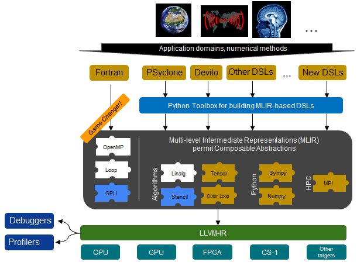

We are developing a common ecosystem for building Domain Specific Languages (DSLs). This will significantly lower the barrier to entry in developing DSLs and aims to improve the end-user experience by affording a mature and well supported ecosystem based upon MLIR and LLVM.
The challenge
Computer simulation is often refered to as the third methodology, complementing theory and experimentation for scientific and engineering research. More efficient aircraft designs, potental vaccines against disseases, increased understanding of the cosmos, more accurate weather modelling, and greater understanding of the fundamental forces underlying matter are just a few of the very many impacts that simulation has delivered, in-fact the vast majority of scientific and engineering developments of the past 20 years have, to some extent, involved simulation.

Given the importance of computer simulation it is no wonder that users are constantly demanding the ability to undertake more detailed runs at reduced time to solution. This raises a significant technological challenge, where both hardware and software struggle to keep up with such ambitions. Whilst there have been very significant improvements at the hardware level arguably many challenges have also been pushed over to the software side. A prime example of this was the leveling off of clock frequency increases, where the industry responded by significantly increasing the amount of parallelism to compensate and contine the growth in performance. We are now in a situation even with current generation supercomputers were the programming challenge to fully exploit an HPC machine is significant, with programmers needing to consider multiple levels of parallelism (inter-node, intra-node but also inter-socket, intra-socket, instruction level) and the interoperability of heterogeneous architectures such as CPUs and GPUs.
Exascale computing on the horizon
There is a great push in the community to develop exascale supercomputers, which are capable of performing over a Quintillion floating point calculations per second. Hardware has developed significantly towards this goal but in a way that presents more complexity to the end-user, for instance via high degrees of hardware heterogeneity, extremely large amounts of parallelism, deeper memory hierarchies, and novel hardware architectures. Whilst these facets can achieve such exascale raw performance, they make the programming of such machines far more complex using current approaches to writing HPC codes. This means that there is a danger that, in the coming decade, we will have extremely powerful supercomputing hardware but only a small number of applications that can fully exploit this by being able to invest the time of the few highly skilled experts in programming them.
Domain Specific Languages (DSLs) to the rescue?
It might be surprising that, by far, the most popular language that HPC codes are written in is Fortran. Whilst more modern languages, such as C++ and Python are slowly gaining more traction, the choice of Fortran due to its convenient language features for writing scientific codes and mature compiler support certainly made a lot of sense traditionally. However Fortran is a general purpose language where the programmer must specify the how as well as the what of their parallel computation. By raising the abstraction level to suit the specific application domain in question, programmers can then not only much more conveniently encode their applications but also the compiler has a rich amount of information which it can use to make tricky, low level choices around how best to run the code in parallel.
Domain Specific Languages (DSLs) have grown in popularity in recent years and enable exactly this, raising the abstraction level to suiting the specific application domain in question. It has been found that these result in significant increases in programmer productivity, performance, and portability across architectures. Put simply, it is the strong belief of many in the HPC community that DSLs will enable domain, rather then HPC, experts to program and effectively exploit future exascale machines. However, the big challenge is that DSLs are typically implemented in isolation fashion with their software stacks siloed and sharing little code or infrastructure between them. This means that whilst a specific DSL might suit an application area, it’s maturity, long term support, ability to efficiently exploit current and future technology might be highly questionable. Furthermore, the development of DSLs and underlying compilation support can be time consuming, with many failing to reach wide spread adoption.
Our solution - an ecosystem for DSL development
To address the challenge of isolate DSL software stacks which can suffer from long development times, immature software stacks, uncertain long term futures, and risky buy in from users we are developing a common ecosystem. This is illustrated below, where the special sauce enabling such a common infrastructure is Multi Level Intermediate Representation (MLIR). MLIR is a technology that has developed over the past couple of years and provides significant flexibility when representing programming languages, with the ability to fairly easily develop new MLIR dialects and build atop existing ones. Many MLIR dialects already exist and furthermore new dialects can be easily developed to support the expressiveness required by a wide range of DSLs for running on large-scale HPC machines.

There are many advantages to this approach, firstly the ability to benefit from a wealth of existing MLIR/LLVM tooling that already exists and successfully targets the wide range of hardware commonly found in HPC machines. This means that there is then significant reuse of infrastructure between DSLs, with improvements to specific parts of the ecosystem then often benefitting other DSLs. Furthermore it enables longevity of the DSL, as whilst the actual DSL abstraction itself might not be further developed, the underlying MLIR/LLVM compilation tools are very actively developed and maintained by a large and vibrant community. As such users can have reasonable confidence that their code will be able to run efficiently on a large number of future architectures.
Such a unified ecosystem also benefits the DSL designer as they only need to implement a front-end for their language, generating the appropriate MLIR which can then benefit from the rest of the compilation stack. Many DSLs are currently encoded within Python, and as such in this project to aid the integration of such abstractions into MLIR we are developing a Python toolbox which will lower the barrier even further for DSL development. Moreover, we believe this also promotes integration between DSLs, where building upon MLIR will enable more easily sharing of features and as such open up specific DSLs to new communities.
Performance portability is a key aim of this project, and we are targetting a variety of hardware including Intel, AMD, and ARM CPUs, Nvidia and AMD GPUs, Xilinx and Intel FPGAs, and the Cerebras CS-1. The hypothesis is that through existing LLVM support for these architectures and the rich dialects of MLIR then the user’s application code written in their DSL of choice can remain largely unchanged between architectures, with the underlying compilation stack being able to efficiently target the technology.